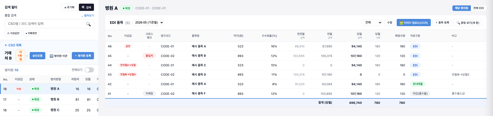
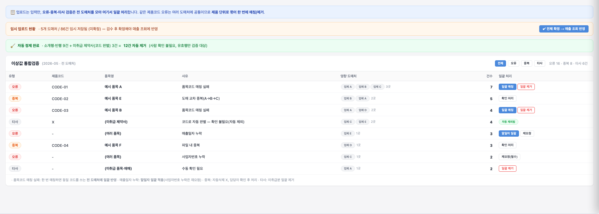

5대 검증 기준을 스킬 지침으로
요구에 없던 자동승인 기능을 원문과 대조해 삭제하고 검수 지침을 보완했습니다.
검증 기준과 사례 보기조명호 · 서비스 기획 PM
공공 시스템의 화면 개선부터
B2B ERP의 업무 흐름과 정책 설계까지.
불편을 찾고, 선택의 이유를 구체화했습니다.
질문을 선택하면
해당 사례와 근거로 연결됩니다.
작은 모달 대신 별도 창을 선택해 입력값과 증빙을 함께 대조하도록 설계했습니다.
웰던 · 업체별 반복에서 오류별 처리로업체마다 반복하던 검증을 오류 유형별로 모아 확인하는 흐름으로 설계했습니다.
웰던 · 데이터 생성 순서에 따른 구축 순서데이터 생성 순서에 맞춰 정산을 먼저 구축하는 방안을 고객사와 합의했습니다.
수자원 · 전체 현황에서 구역별 상세로여러 화면을 거치던 탐색을 전체 현황에서 해당 구역의 상세로 연결했습니다.
기재부 · 재작업 위험을 고려한 선행 작업후속 화면의 재작업 위험을 줄이도록 계산 로직·백엔드 개편의 선행을 제안해 작업 계획에 반영했습니다.
요구 정의 → 화면·정책 → PRD·프로토타입 → 개발 전달
당월 수량과 확정수량을 구분하고, 증빙은 별도 창에서 대조하도록 설계했습니다.
기획 프로토타입 · 식별정보는 가상 값입니다.
AI 산출물을 원문과 대조하는 검수 기준을 만들고,
문서의 출처를 함께 답하는 슬랙 Q&A 봇을 구성했습니다.
요구에 없던 자동승인 기능을 원문과 대조해 삭제하고 검수 지침을 보완했습니다.
검증 기준과 사례 보기출처 표시·추정 답변 금지를 적용한 슬랙 Q&A 봇을 대표 포함 PM 4명이 사용했고, 퇴사 후 사내 AX 담당자에게 이관했습니다.
팀이 서로 다른 답을 알고 있다면?01프로젝트 개요
요구 정의부터 정책·화면 설계, 프로토타입 제작, 개발 전달까지 기획했습니다.
아래는 그중 EDI·매출자료 검증 흐름과 입력·미확정 자료 처리 기준, 구축 순서를 조정한 사례입니다.
기존 흐름기획한 흐름
02문제 발견
거래처 자료는 이메일·우편·카카오톡으로 내부 실무자에게 전달됐습니다. 실무자가 파일을 취합하고 엑셀로 정리해 입력하는 과정에서 자료 중복·누락과 잘못 전달된 자료를 확인해야 했습니다.
EDI 작업은 여러 메뉴에 흩어져 있었고, 입력값이 틀렸는지 원본 자료에 문제가 있는지 확인하려면 자료를 다시 대조해야 했습니다. 매출자료에서는 같은 제품코드 오류가 여러 업체에 반복됐습니다.
03판단과 설계
실무자의 입력·확인 과정을 살펴보니, 오류가 입력 과정에서 생겼는지 원본 자료에 있었는지 구분하기 어려웠습니다. 그래서 입력값을 고치는 기능뿐 아니라, 원본과 대조하며 판단할 수 있는 흐름이 필요하다고 봤습니다.
원본 증빙 이미지에서 OCR로 품목·수량을 읽어 자동 입력하고, 실무자가 원본과 대조해 보정·확정하는 흐름을 설계했습니다. 수신 수량과 확정 수량을 구분해 자동으로 들어온 값과 확인을 마친 값을 나눴습니다.
증빙은 처음에 모달로 보여주려 했지만, 화면이 작아 내용을 확인하고 비교하기 어려웠습니다. 고객사와 협의해 별도 창에서 증빙을 열고 입력 화면과 나란히 대조하는 방식으로 정했습니다. 거래처 → 병의원 → 품목 순으로 탐색하며 대조·보정·확정하도록 연결했습니다.
자료 전달 경로를 포털로 모으고, 거래처가 직접 자료를 업로드·확인하도록 설계했습니다. 내부 실무자는 전달받은 파일을 다시 취합·입력하는 대신 자료를 대조하고 보정·확정하는 역할로 나눴습니다.
직접 선택하는 화면에서는 잘못된 품목 입력을 예방하고, 외부 자료는 유입 후 대조하도록 검증 방식을 나눴습니다.
판단 근거사용자가 선택할 수 있는 품목을 미리 제한할 수 있음
해당 거래처의 허용 품목을 먼저 표시
마스터에 없는 제품은 검색되지 않도록 제한
판단 근거외부에서 들어온 품목은 허용 여부를 대조해야 함
OCR·파일 업로드로 들어온 품목 확인
크로스체크로 품목의 허용 여부 검증
260605 고객사 리뷰에서 합의 · 요구사항 명세에 반영
같은 제품코드 오류를 업체마다 다시 처리하는 문제를 확인했습니다. 검증 단위를 업체로 유지하면 동일한 확인 작업이 반복되므로, 현업 피드백을 반영해 오류를 모아서 판단하는 방향으로 바꿨습니다.
여러 업체의 자료를 임시 업로드하고, 제품코드별로 반복 오류를 모아 확인하도록 설계했습니다. 영향 업체와 오류 사유를 보여주고 일괄 매칭·자료 재요청·중복 확인으로 연결했습니다.
오류는 사업자번호·매출일자 누락, 제품 매칭 실패처럼 유형별 건수로 보여주고, 자료 보완이 필요한 경우 도매업체에 다시 요청하도록 했습니다. 고객사 리뷰에서는 업체별 화면을 나누지 않고 여러 업체 자료의 오류를 모아 검토·처리하는 방향으로 정리됐습니다.
실제 거래 중인 약국도 정보가 갱신되지 않아 미등록으로 나타날 수 있었습니다. 마스터에 없거나 값이 같다는 이유만으로 자료를 확정·삭제하지 않고, 미등록 정보와 중복 의심 자료를 나눠 확인하도록 설계했습니다.
판단 근거신생 약국이거나 실제 거래처의 정보가 갱신되지 않은 경우일 수 있음
명칭·사업자번호·주소로 가등록
임시저장 상태로 두고 거래 처리 화면에 노출하지 않음
검증되지 않은 정보가 그대로 사용되지 않도록 구분
판단 근거날짜·제품·약국·수량이 같아도 자동 삭제로 단정하지 않음
의심 자료를 담당자가 확인할 대상으로 표시
자동으로 지우지 않고 실제 중복 여부 판단
남은 과제: 중복 의심 표시 기준과 변경 로그·수정 사유 입력 방식은 후속 논의 사항으로 남았습니다.
260605 고객사 리뷰 · 260615 디자인 리뷰 · 260617 가등록 필수값 확정
데이터 흐름EDI 자료 수신 → 심평원 데이터 검증 → 마스터데이터 등록
처음에는 기준이 되는 마스터데이터부터 구축하려 했습니다. 업무 흐름을 따라가 보니 마스터데이터는 EDI 자료를 받아 심평원 데이터로 검증한 뒤 등록되는 구조였고, 데이터가 만들어지는 순서와 처음 계획한 구축 순서가 달랐습니다. 내부에서 확인한 내용을 정리해 고객사에 정산부터 구축하는 방안을 제안했고, 협의해 순서를 조정했습니다.
고객사는 병의원을 검색하면 취급 약품과 배치된 CSO 등 관련 정보를 한 번에 확인해 진입 가능 여부를 판단하는 기능을 요청했습니다. 데이터 연결 구조가 복잡하고 EDI 등 정산 기능이 먼저 개발돼야 하므로, 선행 조건을 정리하고 해당 기능의 개발을 뒤로 미뤘습니다.
대신 고객사가 전달한 내용을 토대로 프로토타입을 먼저 만들었습니다. 회의에서 작동 방식과 화면을 확인하고 피드백을 주고받으며 후속 개발을 준비했습니다.
04산출물과 개발 전달
EDI는 수신값과 확정값의 의미를 PRD에, 매출자료는 업체를 분리하지 않고 오류를 모아 검증하는 방향을 결정로그에 남겼습니다. 아래 발췌는 앞의 화면 흐름과 연결되는 근거입니다.
결정로그“일괄 + 사후검증(업체 분리 X), 오류 유형별 건수, 중복 의심만 표기”
260605 · 도매 매출 관리 원문 일부
EDI PRD당월수량은 수신한 값, 확정수량은 증빙 대조 후 확정한 값으로 구분했습니다. SCR-EDI-001로 화면 기능을 정리했습니다.
확인한 문서는 초안 상태입니다.
프로토타입에서는 등록·수정·권한·입력값의 정상 동작 조건을 정했습니다. AI가 브라우저를 조작해 입력·클릭과 결과를 확인하는 방식과 제가 직접 눌러보는 방식을 함께 사용하고, 실패한 부분은 수정 후 다시 확인했습니다.
국세청 연동은 별도 API 호출 도구와 테스트 코드로 확인했습니다. 직접 호출·입력해 응답 데이터와 사업자 상태를 확인하고, 개발자가 실행한 결과도 함께 검토했습니다. 아래 약국 관리 데모는 모의 데이터로 화면 동작을 보여주는 산출물입니다.
화면 단위 PRD의 문서 구조를 발췌했습니다. 원본 PRD 전문이 아닌 재현 샘플이며, 개별 정책의 확정 근거는 위 PRD·결정로그 발췌를 확인하세요.
개요 → 범위 → 요구사항 → 화면 목적 → 개념 정의 → 시나리오 → 정책 → 데이터·연동 → 필드 상세 → 미결
화면 식별자(SCR-ID)를 기준으로 요구사항·정책·필드·미결 사항을 묶고, 고객 요청과 기획자의 해석·제안을 출처로 구분하는 구성입니다.
기존 약국 관리 프로토타입의 조회·행 선택·등록·상세·수정 화면 전환을 확인할 수 있습니다. EDI·매출 검증과는 별도 화면 사례입니다.
비식별 재현본 · 더미 데이터 · 데스크톱 화면용. 저장·등록 및 외부 연동은 실제 처리 기능이 아닌 화면 시연 범위입니다.
05검토 결과
EDI는 입력값과 증빙을 대조하는 흐름으로, 매출자료는 반복 오류를 모아 처리하는 흐름으로 구체화했습니다. 이를 프로토타입·PRD·결정로그로 연결해 개발 기준을 정리했습니다.
현업 리뷰에서는 EDI 수신·입력·보정·확정을 한 화면에서 처리하는 구성에 긍정적인 반응을 받았고, 추가 피드백을 화면과 명세에 반영했습니다.
프로젝트 상태: 기획·구축. 현업 반응은 재직 당시 리뷰 경험에 근거합니다.
회의 기록에서 PRD·프로토타입으로 이어지는 작업을 정리하고, 산출물 검수와 프로젝트 지식 조회에 AI를 적용했습니다.
AI가 명세에 자동승인 기능을 임의로 추가했습니다. 원문 요구사항과 대조해 삭제하고 스킬 지침도 수정했습니다.
요구사항과 업무 흐름을 기획하고, 5대 검증 기준을 스킬 지침에 반영했습니다. 화면 동작과 정책이 기획 의도에 맞는지 검토하고 수정 방향을 정했습니다.
회의록 정리, 메뉴별 PRD 초안 작성, 프로토타입 재정립, 지침에 따른 산출물 검수.
초기에는 AI 검수 후 직접 검토를 병행했습니다.
명세 검수 스킬 원문 일부“출처가 표기된 내용이 실제 소스 문서의 해당 부분과 일치하는가?”
spec-review · 2026.05.19. 원문 대조 절차를 명시한 실제 지침입니다. 자동승인 사례는 재직 당시 경험 설명, 위 발췌는 검수 방식의 문서 근거입니다.
회의 준비·정리, 명세 작성·검수, QA·리스크 점검 등 커스텀 스킬 10종을 구성하고, 스킬·워크플로우를 PM 챕터에 공유했습니다.
초기 AI 명세 작성에서는 모달로 구상한 입력 방식이 새 페이지로 표현되는 등 의도한 화면 동작과 다른 내용이 들어갔습니다. 결과물을 직접 수정하면서, AI가 참고할 회의 내용과 요구사항을 먼저 정리하는 방식으로 작업 순서를 바꿨습니다.
STT 녹취록과 녹음·메모를 구글드라이브에 모으고, Claude로 회의 내용을 정리해 노션에 회의록을 작성했습니다. 이를 바탕으로 PRD를 먼저 만든 뒤 초기 프로토타입을 제작했습니다.
등록·수정 모달, 아코디언 구성, 정보 조회 방식 등을 직접 확인하며 의도한 흐름과 다른 부분이나 빠진 내용을 수정했습니다. 버전을 높이며 상세 명세를 보완한 뒤 PRD·명세서·프로토타입을 팀에 공유했습니다.
프로덕트 디자이너가 Figma에서 화면을 구체화하면, 디자이너·개발자와 의견을 주고받으며 기획을 보완했습니다. 프로토타입은 완성된 서비스가 아니라 화면 동작을 확인하고 팀과 논의하는 산출물로 사용했습니다.
팀원마다 알고 있는 정보와 확정사항이 달랐습니다. 노션 자료도 여러 곳에 흩어져 있어 필요한 내용을 찾는 데 시간이 걸렸습니다.
문서 간 내용이 어긋나지 않도록 AI 스킬로 일관성을 점검하고, 최신 날짜·확정된 결정로그·PRD 등을 기준으로 정보를 확인하도록 규칙을 설정했습니다. 오픈소스 Hermes 에이전트로 구축한 슬랙 Q&A 봇은 구글드라이브와 노션의 녹취록·회의록·PRD·명세서 중 선정한 자료를 참조하도록 구성했습니다.
팀원들은 사업자 중복 확인 버튼처럼 화면·정책의 세부사항을 질문하는 데 활용했습니다. 답변에 출처를 남겨 원문을 확인할 수 있게 했고, 문서에 없는 내용은 예상 답변을 만들지 않도록 지침을 설정했습니다.
참조 자료 선정과 답변 기준 설정, 고객사 추가 확인은 제가 맡았습니다. 대표를 포함한 PM 4명이 봇을 사용했으며, 퇴사 후 사내 AX 담당자에게 이관했습니다.
회의록 정리·메뉴별 PRD 작성·프로토타입 재정립 등에 AI를 적용하고, 약 한 달간 도입 전후의 본인 업무 시간을 직접 비교했습니다.
AI 결과의 검수·수정 시간을 포함한 수치입니다.
측정 범위: AI를 적용한 본인의 기획 업무 전반. 봇 단독 효과나 작업별 감소율은 별도로 측정하지 않았습니다.
공공 시스템에서는 화면·입력 검증 개선과 요구사항 추적을, 광고 운영에서는 AI 검수 오류 분석과 검수 기준 개선안 설계를 수행했습니다.
기존 흐름기획한 흐름
한국수자원공사 AI 기반 스마트 정수장 확대 구축 사업이었습니다. 기존 수작업과 자동화 업무를 연결하고, 적용 가능한 업무부터 AI 자율운영 범위를 넓히는 것이 목표였습니다.
저는 정수장 현장 운영자와 중앙 관제 담당자가 운영 상황을 확인하는 화면을 기획하고, 개발 화면과 실제 사용 흐름을 점검했습니다.
구역별 진행 상황과 이상 여부를 보려면 여러 단계로 진입해야 했습니다. 전체 상황을 먼저 파악하고 필요한 구역의 상세로 이동하도록 정보 배치와 메뉴 구조를 재구성했습니다.
이상 상황을 알아보기 쉽도록 경보의 위치·색상을 정하고, 화면 전환과 로딩·처리 상태 표시도 함께 기획했습니다.
화면 구성을 PPT와 와이어프레임으로 정리했습니다. 개발된 화면을 확인하며 수정 사항을 반영하고, 사용자 테스트(UT)에서는 기획한 화면 흐름과 동작을 점검했습니다.
현장별 시범 적용에서는 오류 유형과 수정 사항을 점검했습니다. 이와 함께 한강유역 정수장을 직접 방문해 운영자가 업무 중 화면을 사용하는 모습을 확인했습니다. 필요한 정보까지 이동하는 단계가 불편하지 않은지, 글자 크기가 읽기에 적절한지, 알림의 위치와 크기가 상황을 알아보는 데 문제가 없는지 살펴봤습니다.
약품·소독 제어와 송수펌프 제어 관련 현황·상세 화면 및 경보 표시의 현장 적용을 확인했습니다. 운영자의 실제 사용 과정에서 나온 피드백을 반영해 수정했습니다.
현장 계측값·운영 기록·경보 로그를 비교하고 현장 운영자와 함께 확인해, 버그·AI 오작동으로 발생한 경보와 실제 조치가 필요한 경보를 구분했습니다. 경보의 심각도·종류·처리 상태를 구분하는 표시 방식을 보완했습니다.
약품 주입 관련 경보 등의 대응 가이드는 메인 PM과 함께 작성하고, 현장 운영자와 검토하며 조정했습니다.
프로젝트 결과오류 경보 건수 40% 감소프로젝트 단위 성과 · 결과보고서 기준. 경보 검증·대응 가이드 보완과 품질점검·요구사항 관리에 참여했습니다.
각 정부 부처 결산 담당자가 사용하는 디브레인 국가결산보고서 시스템 개편 프로젝트였습니다. 기존 시스템의 사용 불편을 해소하고, 결산 정확성과 처리 속도를 개선하는 것이 목표였습니다.
전체 화면 사용자 테스트를 운영하며 입력·검증 흐름, 탐색 단계, 화면 전환·계산 속도 문제를 확인했습니다. 개선안을 기획재정부 담당자와 합의해 개발팀에 전달하고 수정 결과를 재검증했습니다.
입력값의 오류를 저장하거나 계산한 뒤에야 확인할 수 있었습니다. 반복 오류 사례와 입력 → 검증 → 수정 흐름을 검토해, 입력 중에 오류와 종류를 확인하도록 검증 시점과 안내 방식의 개선안을 제안했습니다.
기획재정부 담당자와 개선 방향을 합의한 뒤 개발팀에 전달하고, 입력 중 오류 확인·종류 안내 기능이 개발 화면에 반영된 것을 재검증했습니다. 발견한 오류·버그는 개발자에게 전달하고 수정 후 다시 확인했습니다. RFP 요구사항과 화면·산출물은 RTM으로 연결해 추적했습니다.
개발팀이 서버에 반영한 수정 결과를 입력·저장·계산·조회 기능에서 확인하며 오류와 버그를 점검했습니다. 이 과정에서 작업 기간이 더 짧게 배정된 후속 단계에 예정된 계산 로직 개선·백엔드 개편의 작업량과 다른 화면에 미치는 영향을 검토했습니다.
개별 화면을 먼저 수정하면 후속 개편 결과에 따라 같은 화면을 다시 손봐야 할 위험이 있었습니다. 계산 로직 개선과 백엔드 개편을 앞당기고, 반복 작업과 일부 화면 수정은 이후에 진행하도록 제안했으며 이 제안은 작업 계획에 반영됐습니다. 앞당긴 작업은 재직 중 완료됐으며, 반복 작업과 일부 화면 수정은 후속 작업으로 조정됐습니다.
계산 로직 개선과 백엔드 개편의 구현은 개발팀이 수행했습니다. 저는 작업 순서 조정을 제안하고, 개발 결과를 검증했습니다. UT에서는 기존 검증 항목에 직접 만든 항목을 더해 확인하고, 수정 후 같은 항목을 다시 검증했습니다.
담당 범위와 확인 결과입력 검증 기능 반영·재검증 · 개발 순서 조정 반영·선행 작업 완료담당 역할: 개선안 기획·합의, 작업 순서 조정 제안, 개발 결과 검증. 구현은 개발팀이 수행했습니다.
판매자 광고 이미지의 AI 검수 결과에서 오탐·미탐과 운영자 판단이 갈리는 사례를 유형·빈도로 분석했습니다. 오류 사례별 판단에 필요한 구체적인 검수 규칙과 가이드 문구를 작성해 제안했고, 팀 검토를 거쳐 운영자 검수 가이드에 반영돼 저를 포함한 운영자들이 실제 검수에 적용했습니다. 시스템 처리 방식에 대한 개선 의견도 정리해 전달했습니다.
가이드 적용·결과 점검운영자 검수 가이드에 반영돼 실제 검수에 적용팀 보고서·대시보드에서 동일 이미지에 대한 운영자 판단 불일치 비율과 재검수 판정 변경 건수를 확인했습니다. 담당 역할: 오류 사례 분석 및 검수 규칙·가이드 개선안 설계.
공공 시스템의 화면·검증 흐름 개선, 광고 AI 검수 기준 개선, B2B ERP 단독 기획을 경험했습니다.
사용자가 무엇을 확인하고 어디서 다시 수정하는지 살펴본 뒤 화면과 처리 순서를 기획합니다.
정해진 일정뿐 아니라 작업 사이의 관계를 살펴봅니다. 기재부에서는 후속 개편으로 화면을 다시 수정할 위험을 보고 계산 로직·백엔드 작업을 앞당기도록 제안했고, ERP에서는 데이터가 만들어지는 순서에 맞춰 구축 순서를 조정했습니다.
AI는 구조·레이아웃·문장·코드 초안을 만들고 반복 수정을 수행했습니다. 저는 보여줄 경험과 자료를 선택하고, 사실·수치를 확인하며 디자인 방향과 수정안을 검토했습니다.
재직 중 AI 업무 개선 사례와는 별도의 포트폴리오 제작 경험입니다.
사용자 반응을 확인하며 서비스를 개선하고, 출시 이후의 성장과 매출까지 책임지는 경험을 쌓고 싶습니다.

